Bestiary
Monsters
A bestiary cataloguing monster encounters, classifications, and habitats.
Bestiary Database
Monster Database
14 / 14 monsters
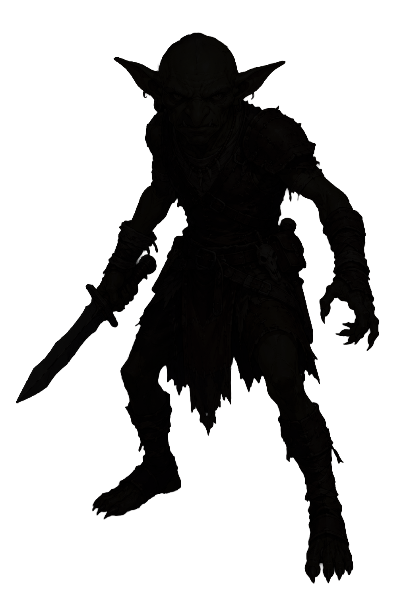
ゴブリン
Goblins
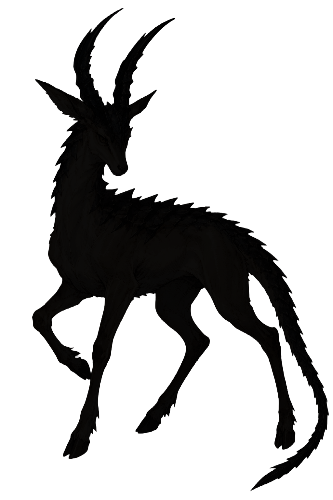
ガゼリオ
Gazelio

フラッファー
Fluffer
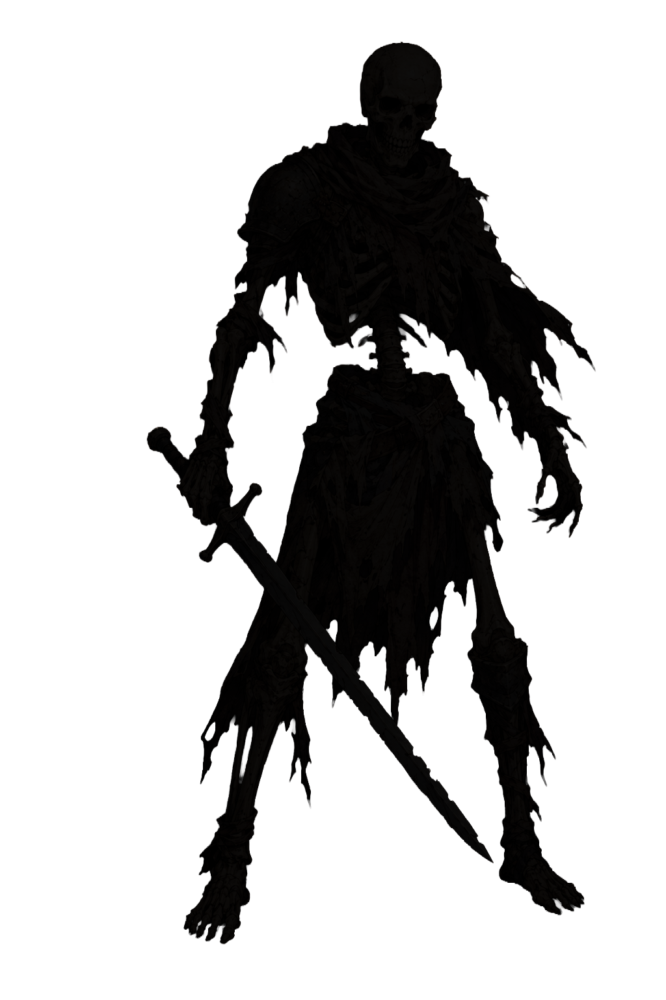
スケルトン
Skeleton
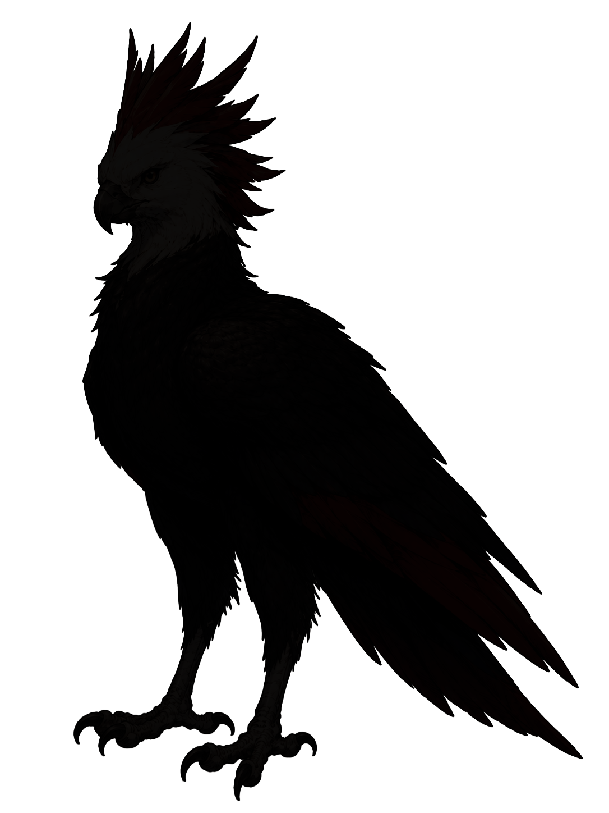
レターウィング
Letterwing
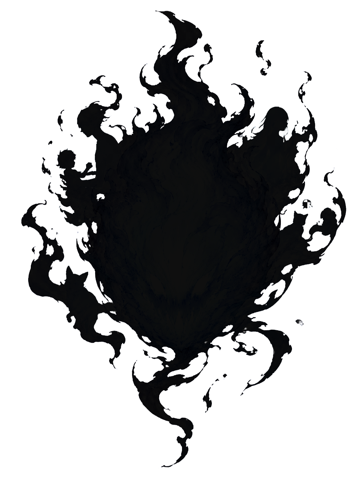
フュー・フォウ
Feu Follet
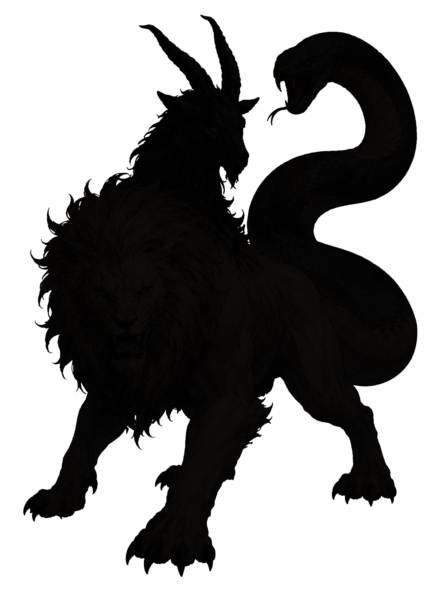
キマイラ
Chimaira
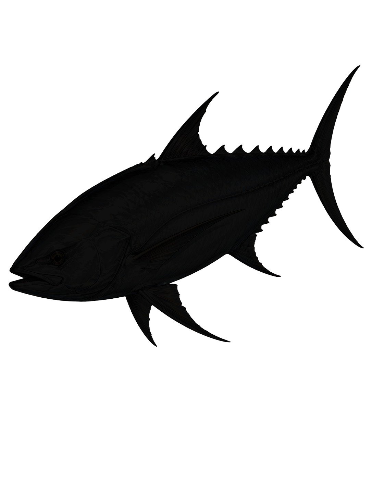
シルバロンド
Silverondo
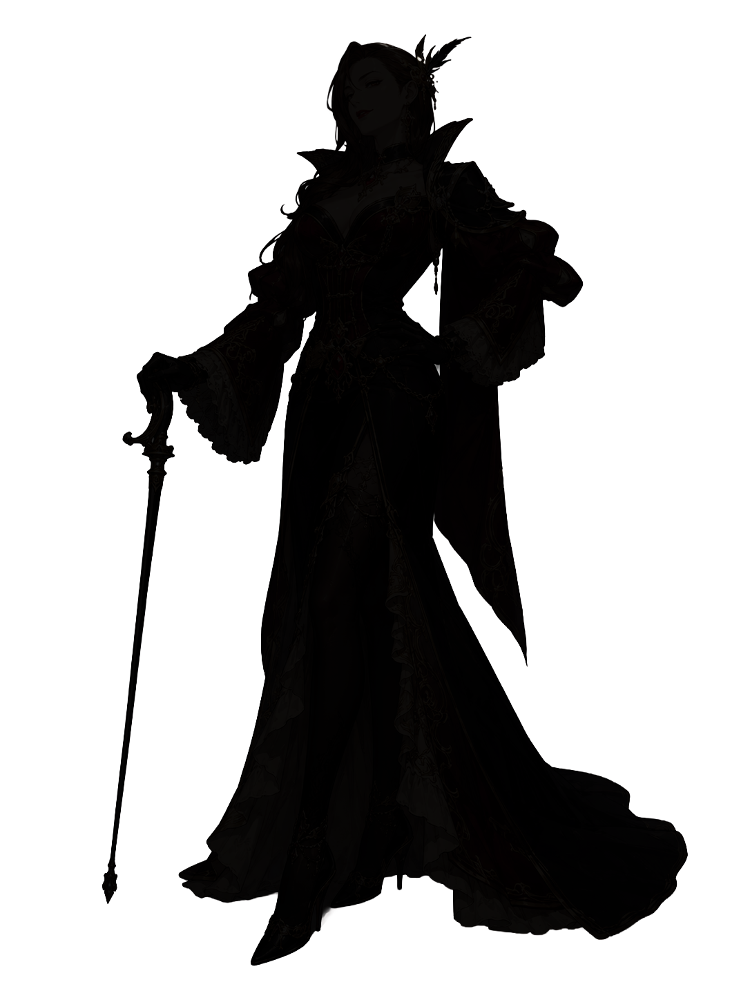
ヴィヴィアン
Vivienne
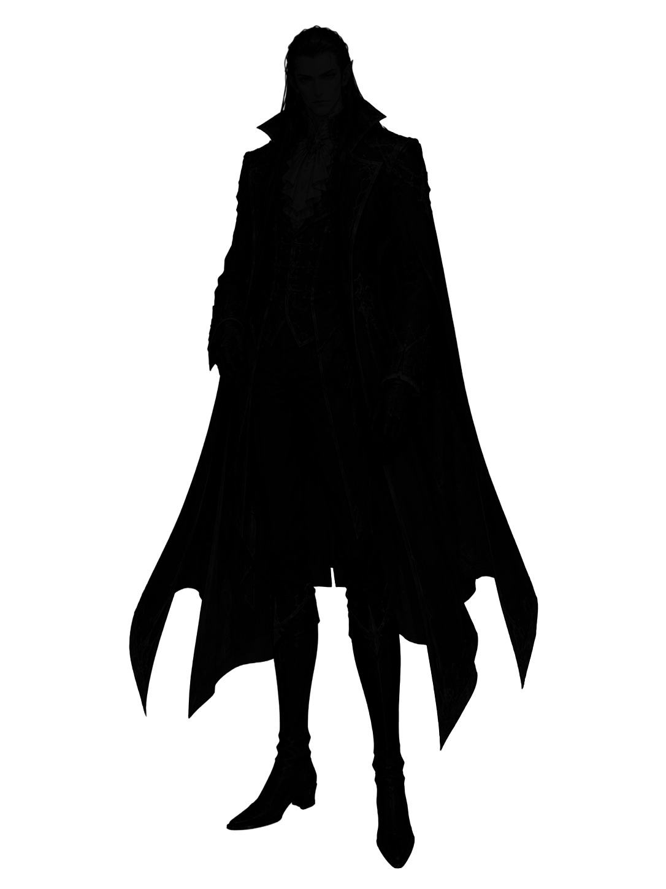
ヴァンパイア
Vampire
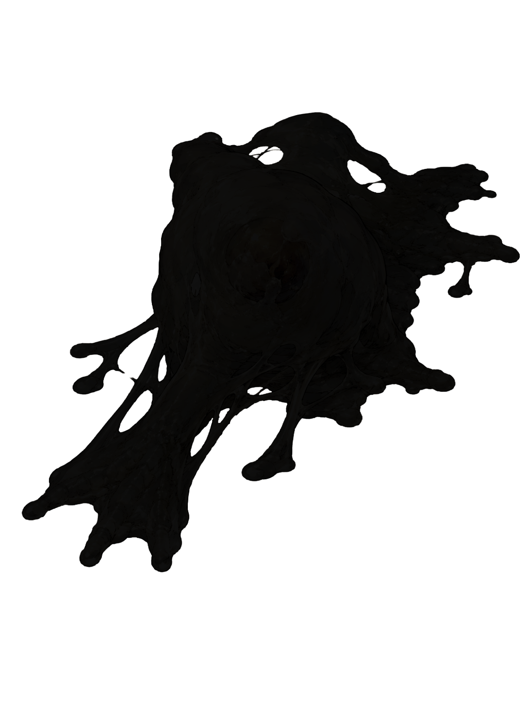
スライム
Slime
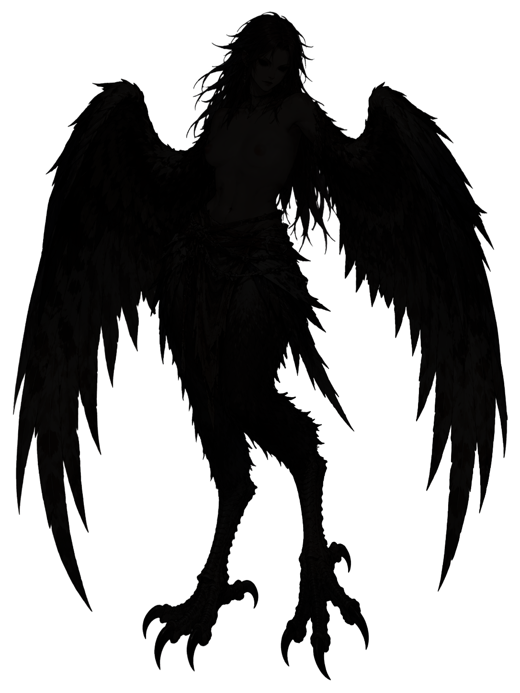
ハーピー
Harpy
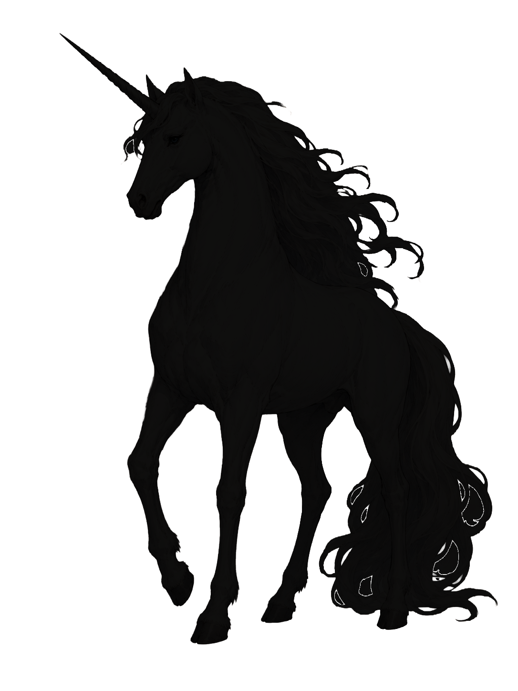
ユニコーン
Unicorn
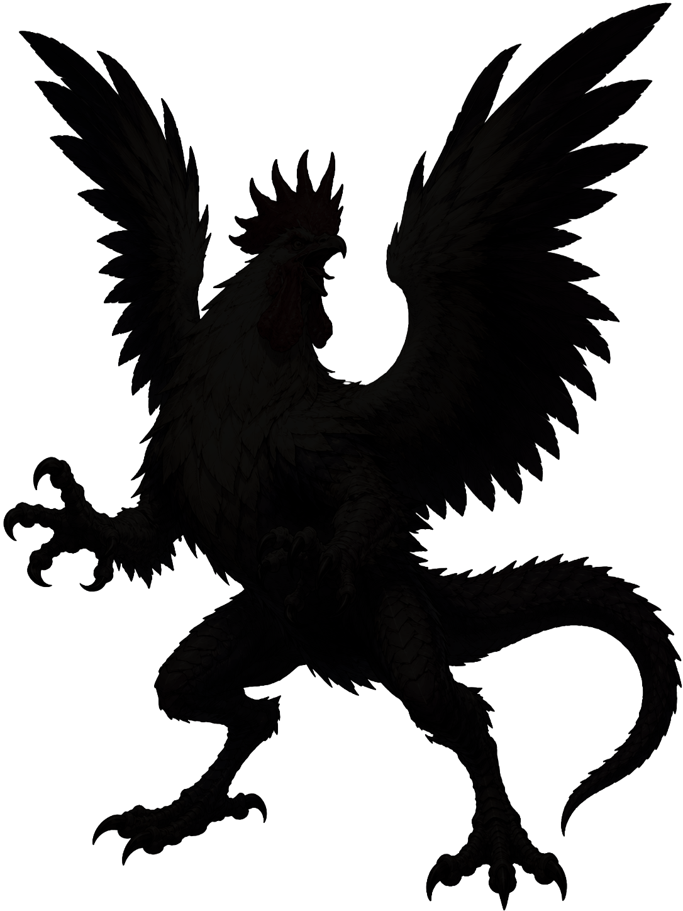
コカトリス
Cockatrice
No monsters match the selected filters.